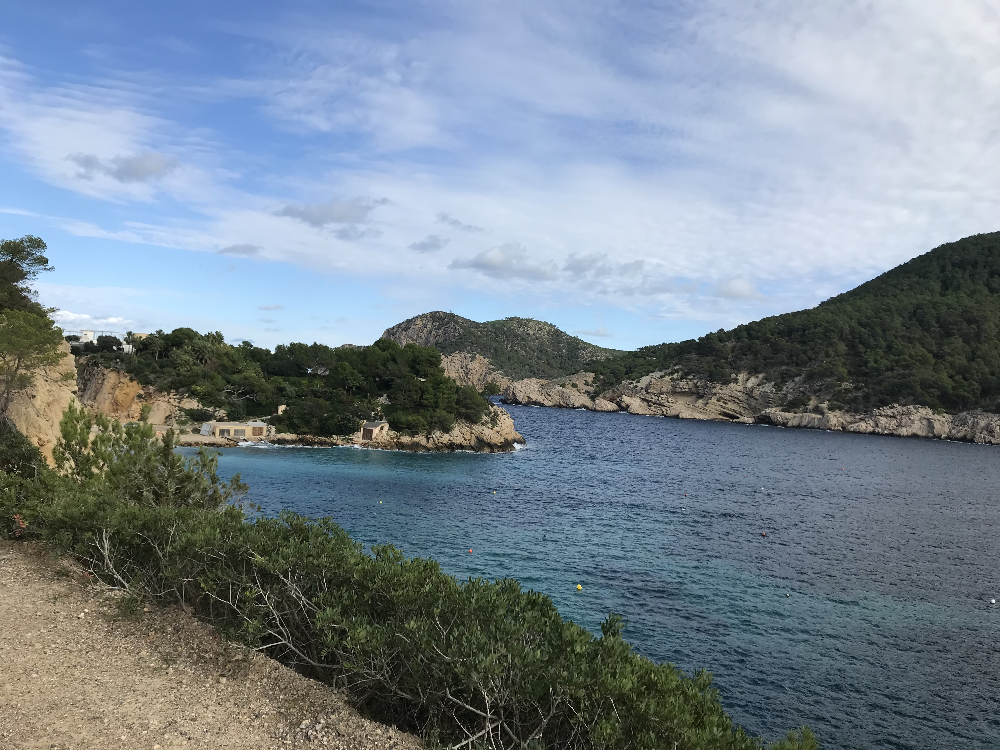
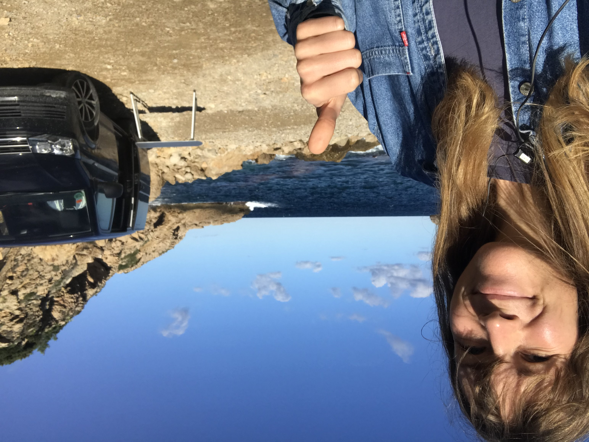

About the trip
So I decided to try out the camping life, and I headed to Ibiza in the not so popular month of november. I found a camper with an ok price on airbnb and I decided to rent it for three weeks. This was going to be a trip for a meditative retreat where I would only eat raw food and meditate on my bodily sensations and tensions. To gain a sense of more freedom in other words.
Ibiza was pretty empty with people, and during my first nights the rain was pouring down and there was a massive storm! To get some more heat in my litte home, I put on the heating from turning on the cars elecetricity and yes, the next day the car wouldn't start - the batteri was out. And of course, my reception on my phone was gone. My warmest clothes were wet so I had to go in the cold weather to the nearest point where I could get som reception and call for help.
It was a challenging time on Ibiza which shortened from 3 weeks to 5 days... but I got some real nice organic fruits, some exciting nights in a van in a stormy weather and beautiful scenery! I will come back for you Ibiza. In a different setting.
Photos from the trip
Some beautiful Ibiza scenery
Keeping the spirit high! Here on a sunny day in the best campingspot!
CLICK HERE for a travelguide to the Balearic Island!